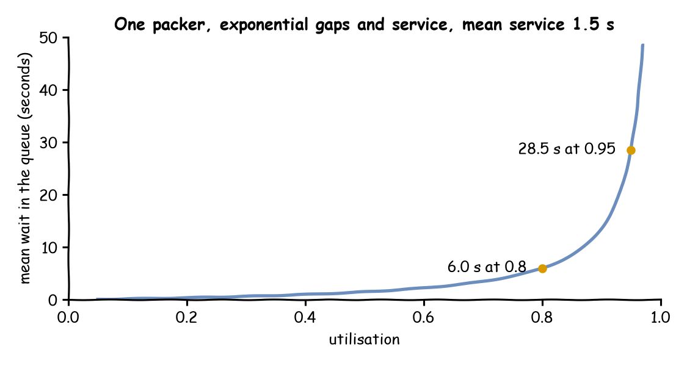
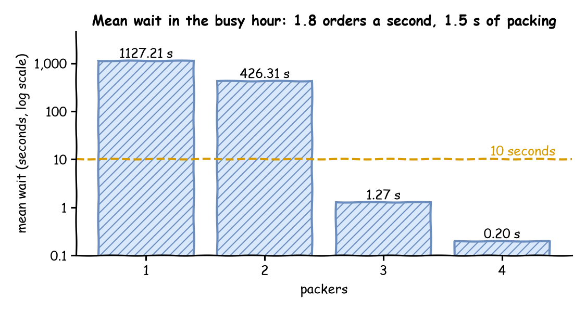

In its busy hour the shop gets 1.8 orders a second, and packing still takes 1.5 seconds. One packer cannot keep up. This page asks: how many packers keep the mean wait under 10 seconds?
Decision: the number of packers for the busy hour.
Measures: the packers' utilisation and the mean wait.
Runs: four runs of the hour, one for each number of packers, each with the seed 42.
Assumptions: orders arrive at random at a steady rate, and every order takes the same time to pack.
What You Add
This page adds more orders, then more packers, and desflow explain, which works out the load from the model before it runs. The shop is the one from First Simulation, with the arrival rate of the busy hour and the number of packers as a setting you change between runs.
Work Out the Load
Before running anything, work out how busy the packers would be. Utilisation is the share of time a resource is busy:
utilisation = arrival rate × mean service time ÷ number of units
The load is the part above the division: arrival rate × mean service time. Here it is 1.8 orders a second × 1.5 seconds = 2.7, so each second brings 2.7 seconds of packing, enough work for 2.7 packers. One packer would be busy 270% of the time, which is impossible: it falls further behind with every order.
With utilisation below 1 a model is stable: the queue rises and falls, but stays bounded.
At 1 or above it is not: the queue grows for as long as the run lasts, and every order waits longer than the one before.
The shop needs at least 3 packers, the fewest that bring utilisation below 1: 2.7 ÷ 3 = 0.9. Queueing Basics explains utilisation, and why the queue grows without limit at 1 or above. Each resource in a model has its own utilisation. The one with the highest utilisation is the bottleneck: it decides how long everything waits.
Here is the busy hour. The arrival rate is 1.8 orders a second, and until is one hour of simulation time:
simulation:sim_id:Shopfactor:0# unpaced: the hour runs in about a secondrandom_seed:42services:packing:{dist:constant, value:1.5 s}arrivals:# The busy hour: 1.8 orders a second, more than one packer can packorders:{dist:exponential, rate:1.8, spawn:pack_order}tasks:pack_order:service:packingresource:packerspayload:{event_type:order_packed}egress:-type:Consolerun:until:1 h
app=SimulationContext(sim_id="Shop",factor=0,random_seed=42)# unpacedapp.add_service("packing",dist="constant",value=1.5)# The busy hour: 1.8 orders a second, more than one packer can pack. Each# order starts the task pack_order.app.add_arrival("orders",dist="exponential",rate=1.8,spawn="pack_order")
service={"packing":DistributionConfig(dist="constant",value=1.5)},# The busy hour: 1.8 orders a second, more than one packer can packarrival={"orders":DistributionConfig(dist="exponential",rate=1.8)},
A blueprint accepts a duration with a unit wherever it takes a time, such as until: 1 h and value: 1.5 s, and reads a plain number as seconds. factor: 0 runs the hour unpaced: as fast as the computer can, in about a second. Nobody needs to watch this run in real time.
Explain the Load
desflow explain does this arithmetic from a YAML or builder model, without running it. It reads three numbers for each resource and works out the fourth:
λ (lambda), the arrival rate: rate: 1.8 of arrivals.orders;
μ (mu), the service rate, one over the mean service time: value: 1.5 s of services.packing gives 1 ÷ 1.5 = 0.667 orders a second for each packer, one order every 1.5 seconds (40 a minute);
c, the number of units: current_cap of resources.packers;
ρ (rho), the utilisation: λ ÷ (c × μ).
Save the files from Full Files in one folder and run the commands there.
The file is queues_and_capacity.yaml from Full Files. Its number of packers comes from the variable PACKERS, which Run It With More Packers sets. With PACKERS not set, the shop has one packer.
defexplain(packers:int)->str:"""The busy hour with `packers` packers, as `desflow explain` prints it."""returnrender_terminal(shop(packers).analyze())
context.analyze() returns the same analysis as an Explanation, and render_terminal prints it as the command does. desflow explain also loads a builder Python file that defines a SimulationContext at module level.
desflow explain does not support low-level models. It reads which arrival starts which task and which resource each task uses, and a low-level model does not declare those links: its SimPy code makes them as it runs.
For a YAML or builder model, it prints the graph from each arrival, the resources, the utilisation at each number of units the resource allows, and hints:
Shop
`-- orders (arrival, rate 1.8/s)
`-- spawn -> pack_order (task, rate 1.8/s)
+-- uses packers (resource)
`-- next (share 1) -> exit
Resources
+-------------------------------------------------------+
| resource | λ | μ | c | ρ | Wq | L | status |
|----------+-----+--------+---+-----+----+---+----------|
| packers | 1.8 | 0.6667 | 1 | 2.7 | - | - | UNSTABLE |
+-------------------------------------------------------+
packers by units
+-------------------------+
| c | ρ | status |
|----+--------+-----------|
| 1 | 2.7 | UNSTABLE |
| 2 | 1.35 | UNSTABLE |
| 3 | 0.9 | CONGESTED |
| 4 | 0.675 | OK |
| 5 | 0.54 | OK |
| 6 | 0.45 | OK |
| 7 | 0.3857 | OK |
| 8 | 0.3375 | OK |
| 9 | 0.3 | OK |
| 10 | 0.27 | OK |
+-------------------------+
Bottleneck: packers
Not estimated:
wait at packers: unstable: the queue grows for as long as the run lasts
Hints for utilisation 0.85:
packers with 4 units: utilisation 0.675, at most 0.85
packers with 1 unit: utilisation 0.85 at a request every 1.76 seconds (34 a minute, 0.5667 a second)
The output has four parts:
The tree shows each order starting pack_order, which uses packers, and the flow ending after it.
The resources table gives λ (the arrival rate) 1.8 orders a second, μ (the rate one packer serves) 0.667 orders a second, c (the number of packers) 1 and utilisation ρ 2.7. The status is CONGESTED from utilisation 0.85 and UNSTABLE from 1, so it is UNSTABLE. The wait (Wq) and the number in the shop (L) are left blank, and the reason is printed below the tables: the queue grows for as long as the run lasts.
The table by units covers 1 to 10 packers, up to max_cap. Three packers are stable but congested at utilisation 0.9.
The first hint names 4 as the fewest packers at or below 0.85. The second hint keeps the current number of units. It gives the rate of requests into the resource at which utilisation reaches the target. With one packer, an arrival rate of 0.5667 orders a second, an order every 1.76 seconds (34 a minute), gives utilisation 0.85. In a network, that rate includes the requests that come back for rework, not only new arrivals.
Run It With More Packers
The number of packers is the resource's current_cap. Each run sets it once:
A DynamicResource with a current_cap of 3 behaves like a SimPy resource with three units: a request is granted as soon as any unit is free, so up to three orders are packed at once. Resources describes how it is built and why.
To read the mean wait, switch on the built-in statistics at the typical level, which keeps the mean wait of every task; Measuring a Run explains the levels.
defmean_wait(packers:int)->float:"""Runs the busy hour with `packers` packers and returns the mean wait."""app=shop(packers)app.run(until=UNTIL)returnapp.env.stats.readings()["Shop.stats.tasks.pack_order.wait_mean"]if__name__=="__main__":forpackersinrange(1,5):print(f"packers {packers}: mean wait {mean_wait(packers):8.2f} s")
defmean_wait(packers:int)->float:"""Runs the busy hour with `packers` packers and returns the mean wait."""env=run(packers)returnenv.stats.readings()["Shop.stats.tasks.pack_order.wait_mean"]if__name__=="__main__":forpackersinrange(1,5):print(f"packers {packers}: mean wait {mean_wait(packers):8.2f} s")
The Builder and Low-level scripts print one line per run. The YAML runs print the same numbers, as the value of their wait_mean lines:
packers 1: mean wait 1127.21 s
packers 2: mean wait 426.31 s
packers 3: mean wait 1.27 s
packers 4: mean wait 0.20 s
Waits Near Full Use
With 2 packers, utilisation is 1.35. The queue grows all hour, so the mean wait depends mainly on how long the run was: run two hours and it roughly doubles. With 3 packers, utilisation is 0.9 and the wait settles. With 4 it is 0.675, and almost nobody waits.
A stable model can still wait a long time, because the wait grows much faster than utilisation near 1. Take one packer with exponential gaps and exponential service times: an M/M/1 queue, in the notation that Queueing Basics explains. Its mean wait in the queue is ρ ÷ (1 − ρ) × the mean service time, where ρ is the utilisation. At utilisation 0.95 the factor is 0.95 ÷ 0.05 = 19, and at 0.8 it is 0.8 ÷ 0.2 = 4, so the wait at 0.95 is about 5 times the wait at 0.8. The chart draws the formula for the shop's 1.5-second packing, with the function desflow explain uses:

Variable times make the wait longer still. Bursts of arrivals, or packing times that vary a lot, fill the queue while the average load is moderate, and the queue takes a long time to empty again. Kingman's formula gives the size of the effect for one server: it multiplies the M/M/1 wait by a factor for the spread of the gaps and of the service times. With exponential gaps and constant packing the factor is 0.5, so the shop's constant packing halves the wait. desflow explain uses Kingman's formula for a resource with one unit, and Choosing Inputs measures the wait with constant, triangular, empirical and exponential packing times.
Little's Law checks a run's output. In a model that settles, the mean number of orders waiting is the arrival rate times the mean wait, Lq = λ × Wq, and the number in the shop is L = λ × (Wq + mean service time). desflow explain prints L beside Wq, and Queueing Basics checks the law against runs of the shop.
Networks and Bottlenecks
In a network, each task's rate comes from the tasks before it. This version of the shop checks every packed order with one checker, and sends one order in ten back to be packed again:
arrivals:orders:{dist:exponential, rate:1.6, spawn:pack_order}services:packing:{dist:constant, value:1.5 s}checking:{dist:exponential, rate:2.5}# 0.4 s on averageresources:packers:{current_cap:4, max_cap:10}checkers:{current_cap:1, max_cap:4}tasks:pack_order:service:packingresource:packerspayload:{event_type:order_packed}next:check_ordercheck_order:service:checkingresource:checkerspayload:{event_type:order_checked}# Nine in ten pass; the tenth is packed againnext:{weights:{ship_order:9, pack_order:1}}ship_order:payload:{event_type:order_shipped}
app=SimulationContext(sim_id="Shop",factor=0,random_seed=42)app.add_arrival("orders",dist="exponential",rate=1.6,spawn="pack_order")app.add_service("packing",dist="constant",value=1.5)app.add_service("checking",dist="exponential",rate=2.5)# 0.4 s on averageapp.add_resource("packers",current_cap=4,max_cap=10)app.add_resource("checkers",current_cap=1,max_cap=4)@app.task(service_id="packing",resource_id="packers",next="check_order")defpack_order(task_id):return{"event_type":"order_packed"}# Nine in ten pass; the tenth is packed again@app.task(service_id="checking",resource_id="checkers",next={"weights":{"ship_order":9,"pack_order":1}},)defcheck_order(task_id):return{"event_type":"order_checked"}@app.task()defship_order(task_id):return{"event_type":"order_shipped"}# print(render_terminal(app.analyze())) prints what desflow explain prints
NETWORK=SimParameter(sim_id="Shop",arrival={"orders":DistributionConfig(dist="exponential",rate=1.6)},service={"packing":DistributionConfig(dist="constant",value=1.5),# One check takes 0.4 s on average"checking":DistributionConfig(dist="exponential",rate=2.5),},resources={"packers":CapacityConfig(current_cap=4,max_cap=10),"checkers":CapacityConfig(current_cap=1,max_cap=4),},)# Each task's service and resource, and the task after itSTEPS={"pack_order":("packing","packers",Router("check_order")),# Nine in ten pass; the tenth is packed again"check_order":("checking","checkers",Router({"weights":{"ship_order":9,"pack_order":1}}),),"ship_order":(None,None,Router(None)),}defstep(env,sampler,shop,name,entity,counters):"""One task of an order, then the task its router chooses."""service,resource,router=STEPS[name]task_id=next(counters[name])ifresourceisNone:env.stats.task_finished(name,task_id)else:env.stats.task_queued(name,task_id)withshop[resource].request()asrequest:yieldrequestenv.stats.task_started(name,task_id)config=env.registry.get_config(f"Shop.service.{service}")yieldenv.timeout(sampler.sample(config))env.stats.task_finished(name,task_id)following=router.choose(Upstream(task_id,entity,{},{}),env)iffollowingisNone:env.stats.flow_finished("orders")else:env.process(step(env,sampler,shop,following,entity,counters))
desflow explain does not support low-level models. It reads which arrival starts which task and which resource each task uses, and a low-level model does not declare those links: its SimPy code makes them as it runs.
Every packed order is checked. Packing receives the new orders, 1.6 a second, and also the tenth of the checked orders that come back. Call the rate into packing x: then x = 1.6 + 0.1 × x, which gives x = 1.6 ÷ 0.9 = 1.778 orders a second. desflow explain queues_network.yaml solves this flow balance for every task. This is its output without the hints at the end:
Shop
`-- orders (arrival, rate 1.6/s)
`-- spawn -> pack_order (task, rate 1.778/s)
+-- uses packers (resource)
`-- next (share 1) -> check_order (task, rate 1.778/s)
+-- uses checkers (resource)
+-- next (share 0.9) -> ship_order (task, rate 1.6/s)
| `-- next (share 1) -> exit
`-- next (share 0.1) -> pack_order (again)
Resources
+----------------------------------------------------------+
| resource | λ | μ | c | ρ | Wq | L | status |
|----------+-------+--------+---+--------+----+---+--------|
| packers | 1.778 | 0.6667 | 4 | 0.6667 | - | - | OK |
| checkers | 1.778 | 2.5 | 1 | 0.7111 | - | - | OK |
+----------------------------------------------------------+
packers by units
+-------------------------+
| c | ρ | status |
|----+--------+-----------|
| 1 | 2.667 | UNSTABLE |
| 2 | 1.333 | UNSTABLE |
| 3 | 0.8889 | CONGESTED |
| 4 | 0.6667 | OK |
| 5 | 0.5333 | OK |
| 6 | 0.4444 | OK |
| 7 | 0.381 | OK |
| 8 | 0.3333 | OK |
| 9 | 0.2963 | OK |
| 10 | 0.2667 | OK |
+-------------------------+
checkers by units
+---------------------+
| c | ρ | status |
|---+--------+--------|
| 1 | 0.7111 | OK |
| 2 | 0.3556 | OK |
| 3 | 0.237 | OK |
| 4 | 0.1778 | OK |
+---------------------+
Bottleneck: checkers
Not estimated:
wait at packers: no closed formula for c > 1 with non-exponential times; run --verify to measure it
wait at checkers: its input is not one arrival or a Poisson flow, which Kingman's formula needs; run --verify to measure it
The four packers are at utilisation 0.667 and the checker at 0.711, the higher of the two, so the checker is the bottleneck. In the table by units, 3 packers would be at utilisation 0.889, above the checker. So with 3 packers the packers are the bottleneck, and a fourth packer moves the bottleneck to the checker. Relieving a bottleneck makes the next busiest resource the new one. desflow explain estimates neither wait here, and says why: four packers with constant packing have no closed formula, and the checker's input is the packers' output, which is neither one arrival nor a Poisson flow. --verify, in Check Against Theory, measures both.
Tuning
To keep a resource stable, lower its utilisation or its variability:
more units: a higher current_cap;
faster service: a shorter service time;
fewer arrivals: a lower rate;
less variable gaps or service times, which shorten the wait at the same utilisation.
To test how a consumer of the records copes, do the opposite on purpose. From utilisation 0.85 a resource is congested, with long waits that come and go, and bursts make them longer. Above 1 it is overloaded: its queue, and the lag of everything after it, grows for as long as the overload lasts.
--target sets the utilisation the hints aim for, 0.85 by default. At 1 or above, the hints are for deliberate overload:
Hints for utilisation 1.2:
packers with 2 units: utilisation 1.35, at least 1.2, for deliberate overload
packers with 1 unit: utilisation 1.2 at a request every 1.25 seconds (48 a minute, 0.8 a second)
With 2 packers the shop runs at utilisation 1.35, above the target of 1.2. With 1 packer, an arrival rate of 0.8 orders a second, an order every 1.25 seconds (48 a minute), gives exactly 1.2.
A scenario step can raise the arrival rate while the model runs and push a resource past full use on purpose. Changing Demand runs such a rush, and its queue grows for as long as the rush lasts.
Result
How many packers keep the mean wait under 10 seconds? 3 packers, as the mean wait for 1 to 4 packers shows:

With 3 packers the mean wait is 1.27 seconds, from one run of the hour with constant packing and the seed 42. With 2 packers it is over 400 seconds and still growing when the hour ends. The answer is the fewest packers that bring utilisation below 1. At utilisation 0.9 the wait stays under 10 seconds, because the shop's packing time is constant and 0.9 is not yet close enough to 1.
Why It Works
Queueing Basics explains why the wait grows without limit as utilisation reaches 1, as the table shows for 1 and 2 packers. It also gives the formula for several packers sharing one queue. Each term of the utilisation is a live parameter, so a running model can be relieved, or overloaded on purpose, as Live Parameters shows. Statistics describes how the mean wait is measured.
The formulas describe a queue that has settled. A run starts with no orders in the shop, so its early waits are shorter than the settled waits. A live change, such as a rush, makes the waits rise, and they take time to settle again. Trusting Results shows how to leave out a warm-up and how long to run.
# The Queues and Capacity tutorial: the shop in its busy hour, as a blueprint.# Run it once per number of packers, and read the mean wait from the last lines:# PACKERS=3 desflow run queues_and_capacity.yaml 2>&1 | grep wait_meansimulation:sim_id:Shopfactor:0# unpaced: the hour runs in about a secondrandom_seed:42services:packing:{dist:constant, value:1.5 s}arrivals:# The busy hour: 1.8 orders a second, more than one packer can packorders:{dist:exponential, rate:1.8, spawn:pack_order}tasks:pack_order:service:packingresource:packerspayload:{event_type:order_packed}egress:-type:Consolerun:until:1 hresources:# The number of packers comes from the PACKERS variable, 1 when it is not setpackers:current_cap:${PACKERS:-1}max_cap:10# The mean wait of pack_order, published once an hour and at the endstats:{level:typical, interval:1 h}
# Queues and Capacity: the busy shop as a network. Packed orders are checked, and# one in ten goes back to be packed again.# Explain it with: desflow explain queues_network.yamlsimulation:sim_id:Shopfactor:0random_seed:42arrivals:orders:{dist:exponential, rate:1.6, spawn:pack_order}services:packing:{dist:constant, value:1.5 s}checking:{dist:exponential, rate:2.5}# 0.4 s on averageresources:packers:{current_cap:4, max_cap:10}checkers:{current_cap:1, max_cap:4}tasks:pack_order:service:packingresource:packerspayload:{event_type:order_packed}next:check_ordercheck_order:service:checkingresource:checkerspayload:{event_type:order_checked}# Nine in ten pass; the tenth is packed againnext:{weights:{ship_order:9, pack_order:1}}ship_order:payload:{event_type:order_shipped}egress:-type:Consolerun:until:1 h
"""The Queues and Capacity tutorial: the shop's busy hour, with the builder.Orders arrive at 1.8 a second and each takes 1.5 seconds to pack. `explain` printswhat `desflow explain` prints for the shop. The script runs the hour once for eachnumber of packers, unpaced, and prints the mean wait of each run. `network` is theshop with a checker and rework."""fromdesflowimportSimulationContextfromdesflow.explain.renderimportrender_terminalUNTIL="1 h"# the busy hourdefshop(packers:int)->SimulationContext:"""The shop in its busy hour, with `packers` packers."""app=SimulationContext(sim_id="Shop",factor=0,random_seed=42)# unpacedapp.add_service("packing",dist="constant",value=1.5)# The busy hour: 1.8 orders a second, more than one packer can pack. Each# order starts the task pack_order.app.add_arrival("orders",dist="exponential",rate=1.8,spawn="pack_order")app.add_resource("packers",current_cap=packers,max_cap=10)# The mean wait of pack_order, kept by the run and read at the endapp.with_stats("typical",interval=3600)@app.task(service_id="packing",resource_id="packers")defpack_order(task_id):return{"event_type":"order_packed"}returnappdefexplain(packers:int)->str:"""The busy hour with `packers` packers, as `desflow explain` prints it."""returnrender_terminal(shop(packers).analyze())defnetwork()->SimulationContext:"""The busy shop as a network: packed orders are checked, one in ten packed again."""app=SimulationContext(sim_id="Shop",factor=0,random_seed=42)app.add_arrival("orders",dist="exponential",rate=1.6,spawn="pack_order")app.add_service("packing",dist="constant",value=1.5)app.add_service("checking",dist="exponential",rate=2.5)# 0.4 s on averageapp.add_resource("packers",current_cap=4,max_cap=10)app.add_resource("checkers",current_cap=1,max_cap=4)@app.task(service_id="packing",resource_id="packers",next="check_order")defpack_order(task_id):return{"event_type":"order_packed"}# Nine in ten pass; the tenth is packed again@app.task(service_id="checking",resource_id="checkers",next={"weights":{"ship_order":9,"pack_order":1}},)defcheck_order(task_id):return{"event_type":"order_checked"}@app.task()defship_order(task_id):return{"event_type":"order_shipped"}# print(render_terminal(app.analyze())) prints what desflow explain printsreturnappdefmean_wait(packers:int)->float:"""Runs the busy hour with `packers` packers and returns the mean wait."""app=shop(packers)app.run(until=UNTIL)returnapp.env.stats.readings()["Shop.stats.tasks.pack_order.wait_mean"]if__name__=="__main__":forpackersinrange(1,5):print(f"packers {packers}: mean wait {mean_wait(packers):8.2f} s")
"""The Queues and Capacity tutorial: the shop's busy hour, on the low-level API.Orders arrive at 1.8 a second and each takes 1.5 seconds to pack. The script runs thehour once for each number of packers, unpaced, and prints the mean wait of each run.`run_network` is the shop with a checker and rework."""importitertoolsfromdesflowimport(CapacityConfig,DistributionConfig,DynamicRealtimeEnvironment,DynamicResource,Router,Sampler,SimParameter,Upstream,)UNTIL=3600# the busy hour, in secondsdefparams(packers:int)->SimParameter:"""The shop in its busy hour, with `packers` packers."""returnSimParameter(sim_id="Shop",service={"packing":DistributionConfig(dist="constant",value=1.5)},# The busy hour: 1.8 orders a second, more than one packer can packarrival={"orders":DistributionConfig(dist="exponential",rate=1.8)},resources={"packers":CapacityConfig(current_cap=packers,max_cap=10)},)defpack_order(env,sampler,packers,task_id):"""One order, which reports each step to the statistics."""path_id="Shop.service.packing"env.stats.task_queued("pack_order",task_id)withpackers.request()asrequest:yieldrequestenv.stats.task_started("pack_order",task_id)yieldenv.timeout(sampler.sample(env.registry.get_config(path_id)))env.stats.task_finished("pack_order",task_id)deforder_generator(env,sampler,packers):arrival=env.registry.get_config("Shop.arrival.orders")task_id=0whileTrue:yieldenv.timeout(sampler.sample(arrival))env.process(pack_order(env,sampler,packers,task_id))task_id+=1defrun(packers:int,until=UNTIL,factor=0.0):"""Runs the busy hour with `packers` packers, unpaced, and returns the environment."""env=DynamicRealtimeEnvironment(factor=factor)env.registry.register_sim_parameter(params(packers))# The mean wait of pack_order, kept by the environment and read at the endenv.setup_stats("Shop","typical",interval=3600)packers_resource=DynamicResource(env,"Shop","packers")sampler=Sampler(seed=42)env.process(order_generator(env,sampler,packers_resource))try:env.run(until=until)finally:env.teardown()returnenvNETWORK=SimParameter(sim_id="Shop",arrival={"orders":DistributionConfig(dist="exponential",rate=1.6)},service={"packing":DistributionConfig(dist="constant",value=1.5),# One check takes 0.4 s on average"checking":DistributionConfig(dist="exponential",rate=2.5),},resources={"packers":CapacityConfig(current_cap=4,max_cap=10),"checkers":CapacityConfig(current_cap=1,max_cap=4),},)# Each task's service and resource, and the task after itSTEPS={"pack_order":("packing","packers",Router("check_order")),# Nine in ten pass; the tenth is packed again"check_order":("checking","checkers",Router({"weights":{"ship_order":9,"pack_order":1}}),),"ship_order":(None,None,Router(None)),}defstep(env,sampler,shop,name,entity,counters):"""One task of an order, then the task its router chooses."""service,resource,router=STEPS[name]task_id=next(counters[name])ifresourceisNone:env.stats.task_finished(name,task_id)else:env.stats.task_queued(name,task_id)withshop[resource].request()asrequest:yieldrequestenv.stats.task_started(name,task_id)config=env.registry.get_config(f"Shop.service.{service}")yieldenv.timeout(sampler.sample(config))env.stats.task_finished(name,task_id)following=router.choose(Upstream(task_id,entity,{},{}),env)iffollowingisNone:env.stats.flow_finished("orders")else:env.process(step(env,sampler,shop,following,entity,counters))defnetwork_orders(env,sampler,shop,counters):arrival=env.registry.get_config("Shop.arrival.orders")fornumberinitertools.count(1):yieldenv.timeout(sampler.sample(arrival))env.stats.flow_started("orders")env.process(step(env,sampler,shop,"pack_order",f"orders-{number}",counters))defrun_network(until=UNTIL):"""Runs the network for the hour, unpaced, and returns the environment."""env=DynamicRealtimeEnvironment(factor=0.0)env.registry.register_sim_parameter(NETWORK)env.setup_stats("Shop","typical",interval=3600)shop={name:DynamicResource(env,"Shop",name)fornamein("packers","checkers")}sampler=Sampler(seed=42)# Weights draw from the routing task's own sequence, as the builder's doSTEPS["check_order"][2].rng=sampler.generator("route.check_order")counters={name:itertools.count()fornameinSTEPS}env.process(network_orders(env,sampler,shop,counters))try:env.run(until=until)finally:env.teardown()returnenvdefmean_wait(packers:int)->float:"""Runs the busy hour with `packers` packers and returns the mean wait."""env=run(packers)returnenv.stats.readings()["Shop.stats.tasks.pack_order.wait_mean"]if__name__=="__main__":forpackersinrange(1,5):print(f"packers {packers}: mean wait {mean_wait(packers):8.2f} s")